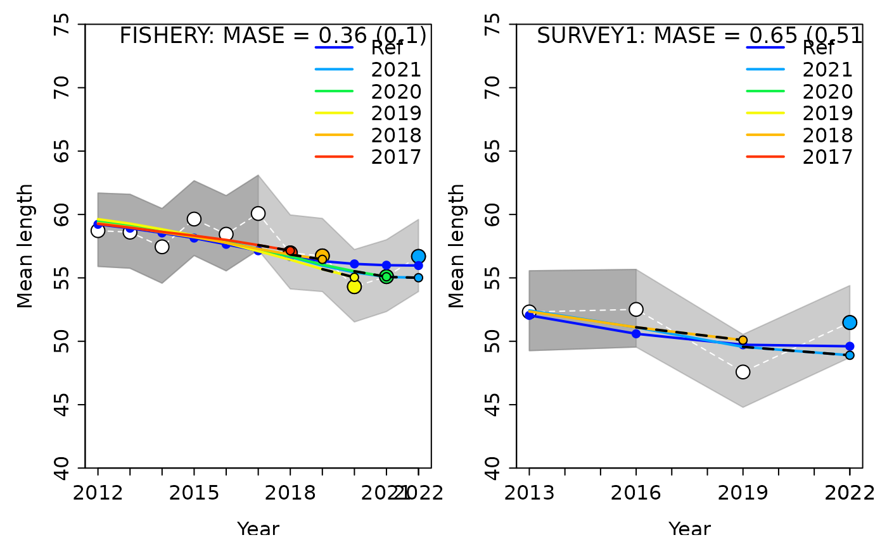

Hindcast cross-validation is used to evaluate the prediction skill of a model by removing a portion of data, fitting the model to the subsequent time series, then projecting over the period that was removed and comparing the projected values to the observations that were omitted. Prediction skill is determined using the mean absolute scaled error (MASE) for input data (index of abundance, length composition, etc). In brief, the MASE score scales the mean absolute error (MAE) of forecasts (i.e., prediction residuals) to the MAE of a naïve in-sample prediction, which is realized in the form of a simple ‘persistence algorithm’ where, for example, an index of abundance will be constant from one year to the next (see Eq. 3, p.5 in Carvalho and Winker et al. 2021). A MASE score > 1 indicates that the average model forecasts are worse than a random walk. Conversely, a MASE score < 1 indicates some prediction skills. For example, a MASE of 0.5 indicates that the model forecasts twice as accurately as a naïve baseline prediction; thus, the model has some prediction power.
Implementing the Hindcast Cross-Validation (HCxval) diagnostic in Stock Synthesis requires the same model outputs generated when running a retrospective analysis. Therefore, no additional step is needed for HCxval if conducted in conjunction with retrospective analysis (see how to conduct a restrospective analysis). For this example we will use the same output created in the retrospective example.
Analyzing HCxval results requires the same first step of summarizing the list of retrospective runs as for the retrospective analysis.
retro_mods <- r4ss::SSgetoutput(dirvec = file.path(dir_retro, "retrospectives", paste0("retro", seq(0, -5, by = -1))), verbose = F)
retroSummary <- r4ss::SSsummarize(retro_mods, verbose = F)Visualizing Output
HCxval is implemented using ss3diags::SSplotHCxval(),
which produces the novel HCxval diagnostic plot and computes the MASE
scores for indices of abundance, mean lengths, or mean ages that have
observations falling within the hindcast evaluation period.
r4ss::sspar(mfrow = c(1, 2))
SSplotHCxval(retroSummary, subplots = "cpue", add = TRUE)
#> Plotting Hindcast Cross-Validation (one-step-ahead)
#>
#> Computing MASE with only 1 of 5 prediction residuals for Index SURVEY1
#>
#> Warning: Unequal spacing of naive predictions residuals may influence the interpretation of MASE
#>
#> Computing MASE with all 5 of 5 prediction residuals for Index SURVEY2#>
#> MASE stats by Index:
#> Index Season MASE MAE.PR MAE.base MASE.adj n.eval
#> 1 SURVEY1 1 0.5026435 0.08879379 0.1766536 0.5026435 1
#> 2 SURVEY2 1 0.6149530 0.37737925 0.6136717 0.6149530 5In the plots above, we see that, for both fleets, the model has fairly good prediction skills for index of abundance data (compared to a random walk). In the plots, the white points and white dashed line are the observed data that were included in the model with a truncated time series. The larger colored points are the observed data from each retrospective peel (i.e. data that was removed in that peel). The smaller colored points and dashed lines show the model predicted values. The “Ref” line is the model run with the complete time series of data. The grey shaded areas represent the uncertainty of the data, with the darker portion indicating the portion that were included in the model and the lighter portion indicating which ones were removed and projected. The MASE scores displayed are the MASE and adjusted MASE in parentheses.
Composition Data
To visualize the mean length and mean age, you will need to add an
additional step. Because the forecast length- and age-composition
information are stored as “ghost files” in the SS report.sso file, you
need to use ss3diags::SSretroComps() to extract and
summarize that information before creating the plots.
retroSummary_comps <- SSretroComps(retro_mods)
r4ss::sspar(mfrow = c(1, 2))
hcl <- SSplotHCxval(retroSummary_comps, subplots = "len", add = TRUE, ylim = c(40, 75))
#> Plotting Hindcast Cross-Validation (one-step-ahead)
#>
#> Computing MASE with all 5 of 5 prediction residuals for Index FISHERY
#>
#> Computing MASE with only 1 of 5 prediction residuals for Index SURVEY1
#>
#> Warning: Unequal spacing of naive predictions residuals may influence the interpretation of MASE
#>
#> MASE stats by Index:Customizing the Plot
HCxval plots can be customized in many ways, some common features that you may want to specify are:
- displaying only a specific fleet
- removing uncertainty intervals
- adjusting the x- or y-axis
- not displaying the adjusted MASE value on the plot
Examples of each of these changes are shown below, incrementally making each adjustment.
r4ss::sspar(mfrow = c(2, 2))
SSplotHCxval(retroSummary_comps, subplots = "len", add = TRUE, indexselect = 1)
#> Plotting Hindcast Cross-Validation (one-step-ahead)
#>
#> Computing MASE with all 5 of 5 prediction residuals for Index FISHERY
#>
#> MASE stats by Index:
#> Index Season MASE MAE.PR MAE.base MASE.adj n.eval
#> 1 FISHERY 1 0.3591138 0.01034467 0.02880609 0.1034467 5
SSplotHCxval(retroSummary_comps,
subplots = "len", add = TRUE,
indexselect = 1, indexUncertainty = FALSE
)
#> Plotting Hindcast Cross-Validation (one-step-ahead)
#>
#> Computing MASE with all 5 of 5 prediction residuals for Index FISHERY
#>
#> MASE stats by Index:
#> Index Season MASE MAE.PR MAE.base MASE.adj n.eval
#> 1 FISHERY 1 0.3591138 0.01034467 0.02880609 0.1034467 5
SSplotHCxval(retroSummary_comps,
subplots = "len", add = TRUE,
indexselect = 1, indexUncertainty = FALSE, ylim = c(45, 70)
)
#> Plotting Hindcast Cross-Validation (one-step-ahead)
#>
#> Computing MASE with all 5 of 5 prediction residuals for Index FISHERY
#>
#> MASE stats by Index:
#> Index Season MASE MAE.PR MAE.base MASE.adj n.eval
#> 1 FISHERY 1 0.3591138 0.01034467 0.02880609 0.1034467 5
SSplotHCxval(retroSummary_comps,
subplots = "len", add = TRUE,
indexselect = 1, indexUncertainty = FALSE, ylim = c(45, 70), show.mase.adj = F
)
#> Plotting Hindcast Cross-Validation (one-step-ahead)
#>
#> Computing MASE with all 5 of 5 prediction residuals for Index FISHERY#>
#> MASE stats by Index:
#> Index Season MASE MAE.PR MAE.base MASE.adj n.eval
#> 1 FISHERY 1 0.3591138 0.01034467 0.02880609 0.1034467 5Summary Table
In addition to the HCxval plots, a summary statistics table can be
produced using ss3diags::SSmase(). This table includes:
- Index - the fleet
- Season
- MASE - MASE score
- MAE.PR - mean absolute error of prediction residuals
- MASE.base - naive prediction
- MASE.adj - adjusted MASE score
- n.eval - number of points prediction skill was calculated for
Adjusted MASE gets invoked in cases where the inter-annual variation
in the observed values is very small (default MAE < 0.1 for naive
predictions log(y[t+1])-log(y[t])). The reasoning is that prediction
residuals must be already very accurate to fall below this threshold.
The adjusted MASE essential keep the naive prediction MAE denominator of
the MASE to a maximum. Below we show the effect of changing adjustment
threshold from the default MAE.base.adj = 0.1
mase1 <- SSmase(retroSummary_comps, quant = "len", MAE.base.adj = 0.1)
mase1
#> Index Season MASE MAE.PR MAE.base MASE.adj n.eval
#> 1 FISHERY 1 0.3591138 0.01034467 0.02880609 0.1034467 5
#> 2 SURVEY1 1 0.6526074 0.05142002 0.07879167 0.5142002 1
#> 3 joint 0.4628955 0.01719056 0.03713702 0.1719056 6to a larger value MAE.base.adj = 0.15
SSmase(retroSummary_comps, quant = "len", MAE.base.adj = 0.15)
#> Index Season MASE MAE.PR MAE.base MASE.adj n.eval
#> 1 FISHERY 1 0.3591138 0.01034467 0.02880609 0.06896444 5
#> 2 SURVEY1 1 0.6526074 0.05142002 0.07879167 0.34280015 1
#> 3 joint 0.4628955 0.01719056 0.03713702 0.11460372 6where MASE is the ratio of the mean absolute error of
the prediction residuals MAE.PR to the residuals of the
naive predictions MAE.base
mase1$MAE.PR / mase1$MAE.base
#> [1] 0.3591138 0.6526074 0.4628955
mase1$MASE
#> [1] 0.3591138 0.6526074 0.4628955and MASE.adj
mase1$MAE.PR / pmax(mase1$MAE.base, 0.1)
#> [1] 0.1034467 0.5142002 0.1719056
mase1$MASE.adj
#> [1] 0.1034467 0.5142002 0.1719056